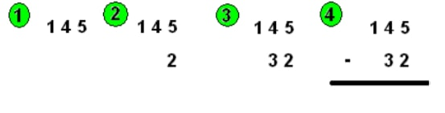
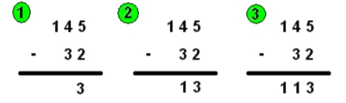
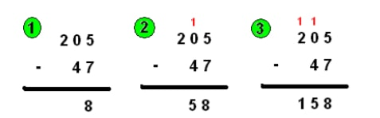

La soustraction est la différence entre deux nombres et/ou chiffres.
Pour poser une soustraction, le principe est le même que pour poser une addition. On écris d’abord le
premier nombre, puis on aligne, de la droite vers la gauche, chaque chiffre du deuxième nombre avec
ceux du premier. On écris ensuite le « - » et on trace le trait.
Attention !!! Le nombre que tu écris en premier (celui en haut) doit être le plus grand des deux!.
Exemple :
Posons la soustraction suivante 145 – 32:

On écrit d’abord le premier chiffre 145. Puis on aligne le 2 du 32 avec le 5 du 145, puis on aligne le 3
du 32 avec le 4 du 145. Enfin, on écris le moins (-) et on trace le trait.
Exemple :
Prenons l’exemple précédent : 145 – 32.

Pour résoudre cette soustraction, on procède de la manière suivante, en partant de la droite. « 2 pour
aller à 5 » fait 3 donc je pose le 3, en dessous du trait, dans la même colonne que le 5 et le 2. Ensuite
dans la deuxième colonne, on fait « 3 pour aller à 4 », ce qui fait 1. Je pose le 1 en dessous du trait,
dans la même colonne que le 4 et le 3. Enfin dans la troisième colonne, on n’a qu’un chiffre, ce qui
donne « 0 pour aller à 1 », ce qui fait 1. Je pose le 1 en dessous du trait dans la même colonne que le 1.
Le résultat de 145 – 32 est donc 113.
Exemple :
Prenons l’exemple suivant : 205 – 47.

En premier on fait « 7 pour aller à 5 ». Ce n’est pas possible car 7 est plus grand que 5. Donc on va
faire « 7 pour aller à 15 ». Ce qui fait 8 ; comme on a changé le 5 en 15, il ne faut pas oublier de
marquer la retenue dans la colonne suivante (la deuxième colonne). On pose le 8 dans la même
colonne que le 7 et le 5 et on retient 1. Dans la deuxième colonne on a « 4 pour aller à 0 », or on a
une retenue qu’on va ajouter à 4 4 + 1 = 5 donc cela donne « 5 pour aller à 0 ». 5 est plus grand
que 0 donc on fait « 5 pour aller à 10 », ce qui donne 5. On pose le 5 en dessous du trait dans la
même colonne que le 0 et le 4 et on n’oublie pas de marquer la retenue dans la colonne suivante.
Dans la troisième colonne on a « 0 pour aller à 2 », or il y a la retenue (0 + 1 = 1) donc cela donne « 1
pour aller à 2 », ce qui fait 1. On pose le 1 en dessous du trait dans la troisième colonne. Le résultat
de 205 – 47 est donc 158.